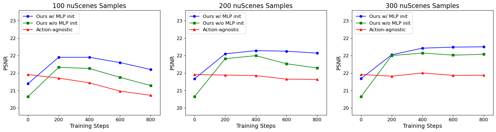

R1-4: Ability to Capture Sudden Transitions
R1-7: Ability to Capture Spatially Misaligned Actions
R2-8: Context Disentangling Ability for Continuous Action Space
R2-8: Ability to Capture Complex Actions
R2-6: Adaption to Continuous Action Spaces

R2-8 & R4-1: Latent Action Visualization